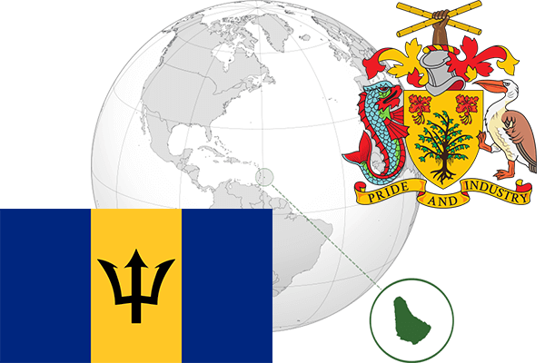

To`liq nomi: Barbados
Region: Markaziy Amerikaning sharqiy qismi
Qonunchilik shakli: Konstitutsion monarxiya
Mustaqillik kuni: 30 noyabr 1966 -yil Birlashgan Qirolligidan
Poytaxti: Brijtaun
Maydoni: 439 km² (dunyoda 199 -o`rinda )
Chegaradosh davlatlari: yo`q
Aholisi: 277,821 (dunyoda 180 -o`rinda ) 2010 -yil roʻyxat
Aholi zichligi: 660 /km²
Aholining o`rtacha yoshi: 73,00 yil ( 75,00 ayollar, 71,00 erkaklar)
Rasmiy tili: Ingliz tili
Dini: xristian
Pul birligi: Barbados Dollar (BBD)
Telefon prefiksi: +1
Internet domen: .bb
Xalqaro tashkilotlarga a`zoligi: BMT (1966 -yildan),
Dengiz va okeanlarga chiqishi: Karib dengizi
YIM: Butun: $ 4.658 mlrd, Jon boshiga: $ 16,653 (2015 - yil roʻyxati)
Yirik shaharlari: Brijtaun